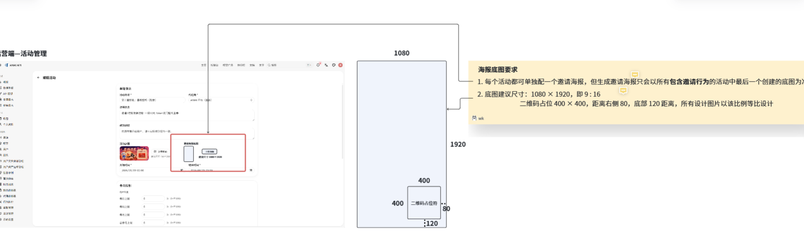
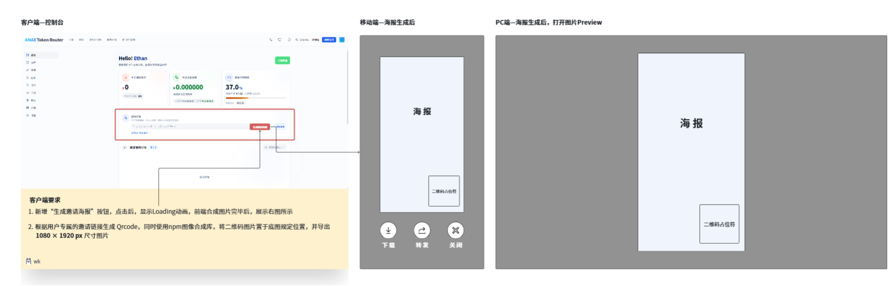
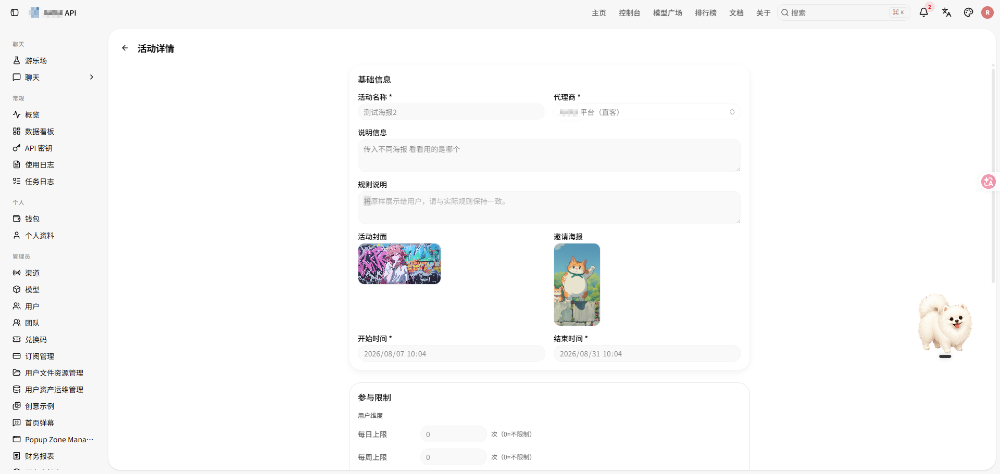
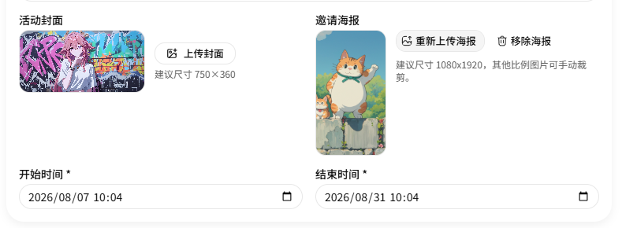
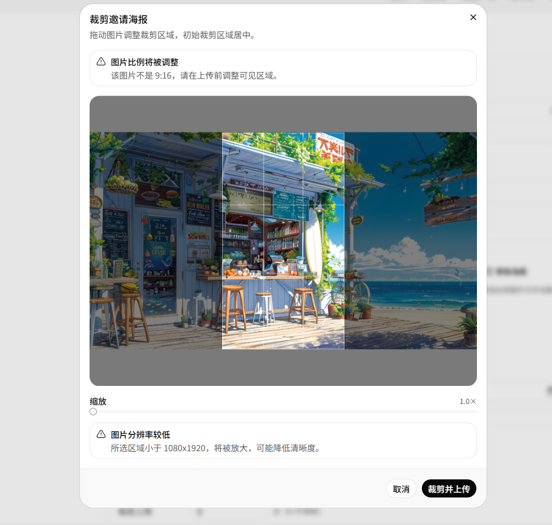
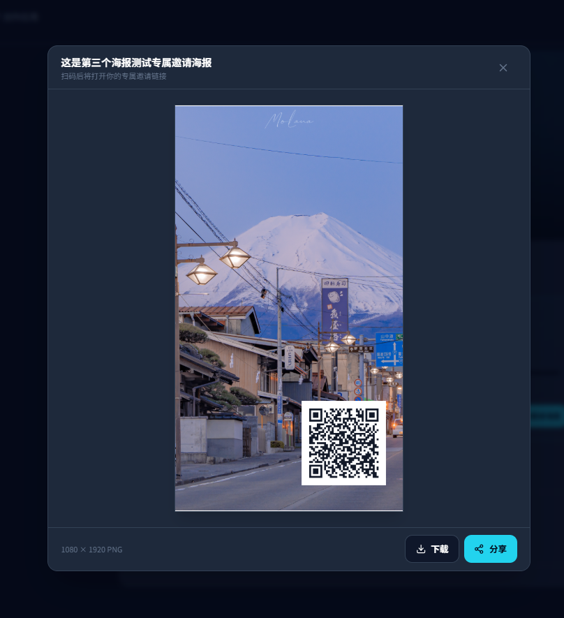
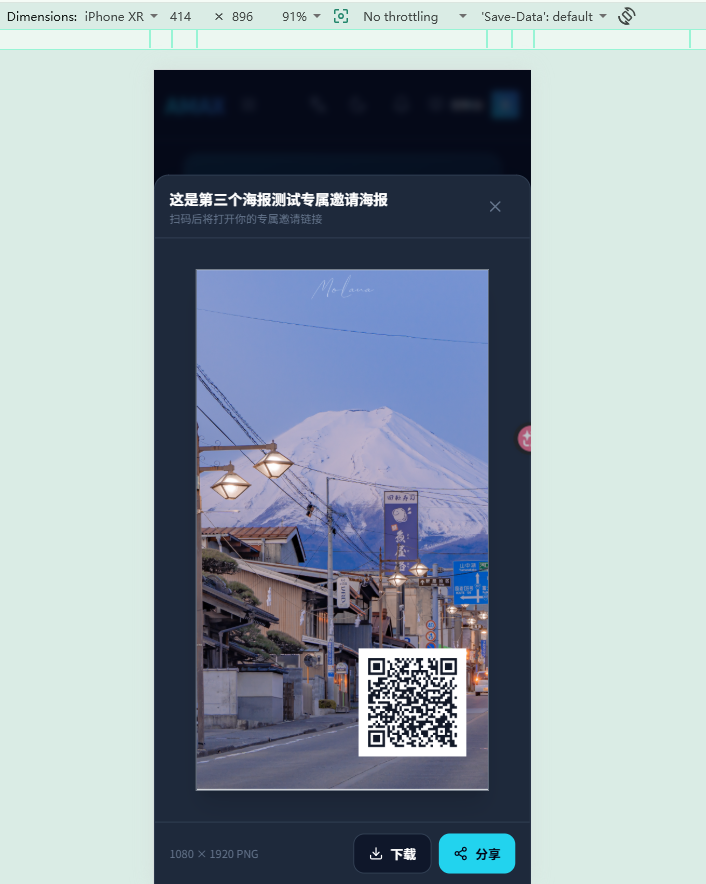

从邀请链接到可分享海报：专属二维码海报的跨端设计与性能优化
后台只维护一张活动底图，前端按当前用户的邀请链接实时生成专属二维码并本地合成海报，既降低服务端生成压力，也避免为每个用户重复存图。
需求来源：飞书需求文档
目录
一、需求背景
原有邀请方式以复制链接为主，适合即时通讯，却不适合朋友圈、社群海报等视觉传播场景。本次增加“邀请专属二维码海报”：
- 管理员可以为邀请活动上传竖版海报底图；
- 用户从活动入口打开自己的专属海报；
- 系统将用户邀请链接编码为二维码并固定叠加到底图；
- 用户可以下载图片，支持时也可以调用系统分享面板；
- PC 与移动端都能完成预览和操作。
需求原型


二、为什么选择“底图服务端管理，二维码浏览器合成”
如果服务端为每位用户生成并保存一张完整海报，会产生大量重复图片、额外对象存储和生成接口排队。实际上，所有用户共享同一张底图，唯一变化的只有邀请链接和二维码。
因此最终方案将不变量与变量拆开：
Ctrl / ⌘ + 滚轮缩放，放大后可拖动查看
该设计带来三个直接收益：
- 服务端只存一份活动底图；
- 专属邀请链接不进入共享图片缓存；
- 合成过程不占用后端图片处理队列，用户重复打开还能直接复用本地结果。
三、三个项目的职责边界
| 项目 | 是否改动 | 职责 |
|---|---|---|
new-api | 是 | 活动海报字段、后台上传裁剪、活动选择、安全图片读取、MinIO 缓存 |
amax-router | 是 | 入口接入、二维码生成、Canvas 合成、预览、下载分享、浏览器缓存 |
llm-router | 否 | 该功能不涉及模型路由或日志聚合，不进入调用链 |
明确让 llm-router 不参与，是这次设计中的主动取舍：邀请海报属于活动配置与前端媒体生成，不应该为了“统一入口”再增加一层无业务价值的转发。
四、后台配置与图片规范
1. 活动模型增加邀请海报字段
new-api 的活动模型增加：
InvitePosterUrl string `json:"invite_poster_url"`创建活动和编辑活动都可以保存该字段。后台上传接口接受 PNG、JPEG、WebP，单文件最大 20 MB，对象使用 activity-invite-poster 前缀保存到 MinIO。

2. 上传时统一裁剪为 9:16
海报画布固定为 1080 × 1920，因此后台在上传阶段提供裁剪界面。非 9:16 图片会先提示比例调整，低于目标分辨率时提醒可能损失清晰度，再由管理员确认裁剪区域。


把尺寸问题前置到配置阶段，可以让所有用户端生成过程使用同一套确定坐标，避免每次打开海报都重新计算版式。
五、如何选择“当前最新海报”
用户进入海报入口时，GET /api/user/activity/invite-poster 会从服务端按当前登录用户所属 portal 选择活动，客户端不能自行传 portal 越权查询。
候选活动必须同时满足：
- 活动已启用；
- 当前时间位于开始与结束时间之间；
- 活动属于当前用户 portal；
- 活动行为是邀请活动。
在候选集合中按 CreatedAt 倒序选择最新活动，时间相同时再按 ID 排序。这里判断的是创建时间，不是 UpdatedAt：更新旧活动的海报不会让它自动超过后来创建的活动。
还有一个刻意保留的边界：如果选中的最新邀请活动没有配置海报，接口返回“当前不可用”，不会静默回退到更旧活动的海报。这样可以避免活动规则与视觉物料错配。
活动详情接口同时输出：
invite_poster_available
invite_poster_image_url因此列表入口可以查询当前活动，详情页入口则可以直接复用当前活动上下文。
六、安全读取海报底图
1. 为什么不让 Canvas 直接加载对象存储公网地址
浏览器 Canvas 读取跨域图片可能被污染，最终无法导出 PNG；直接把任意 URL 交给后端读取，还会引入服务端请求伪造和越权风险。
new-api 因此提供同源、需登录的图片接口：
GET /api/user/activity/:id/invite-poster/image读取前会再次校验：
- 当前用户 portal 与活动一致；
- 活动处于启用和有效期内；
- 活动类型确实是邀请活动；
- 已配置非空海报地址。
前端也只接受符合 /api/user/activity/数字/invite-poster/image 形式的同源地址，并拒绝 query 与 hash，避免组件被复用时加载意外资源。
2. 公网 URL 只作为对象定位依据
后端不会再绕公网 URL 下载自己 MinIO 中的文件，而是校验 URL 的协议、主机、基础路径与 bucket 后，解析出安全 object key，通过 MinIO 内部连接直接读取。
保护边界包括：
- 拒绝跨主机、跨 bucket 和路径穿越；
- 拒绝带查询参数的对象地址；
- 仅允许 PNG、JPEG、WebP；
- 最大读取 20 MB；
- 单次读取超时 15 秒。
最终图片以流式响应返回给浏览器，既解决 Canvas 跨域问题，也不开放通用代理能力。
七、浏览器端生成专属海报
1. 邀请链接与二维码
当前用户的专属链接格式为：
${origin}/login?aff=${affCode}二维码采用高容错级别 H，黑白配色并保留 4 个模块的静区。固定画布与位置为：
const poster = { width: 1080, height: 1920 }
const qr = { x: 600, y: 1400, size: 400, quietZoneModules: 4 }生成前会校验底图的实际尺寸必须精确等于 1080 × 1920，防止后台旧数据或异常图片造成二维码偏移。
2. 原生 Canvas 合成流程
最终实现移除了 Konva 依赖，直接使用浏览器原生 Canvas：
Ctrl / ⌘ + 滚轮缩放，放大后可拖动查看
原生 Canvas 足以完成两张位图的确定性叠加，减少了额外渲染抽象和包体依赖。导出完成后会主动释放 Canvas 像素内存，关闭弹窗或替换结果时也会回收 Object URL。
3. 交互与多端适配
生成器覆盖了加载、成功、失败、重试和关闭中断等状态，并支持：
- Esc 关闭与焦点约束；
- 安全文件名下载；
- 浏览器支持 Web Share API 时调用系统分享；
- 不支持文件分享时回退为下载；
- 桌面端与移动端自适应布局。


八、性能优化：解决生成慢与偶发超时
性能问题并不只发生在二维码绘制阶段。原链路中，服务端可能通过公网地址回读 MinIO，浏览器首次打开还要等待底图、二维码模块和图片合成全部串行完成。
最终从服务端和浏览器两侧同时优化：
1. 服务端底图缓存
- MinIO 内部直读：去掉服务端到公网域名的网络绕行；
- 10 分钟内存缓存：共享底图命中后无需重复读取对象存储；
- 32 MB LRU 上限：按总字节数淘汰，限制常驻内存；
- singleflight 合并冷请求：同一底图首次并发读取时只访问一次 MinIO。
底图对同一活动的所有用户完全相同，因此适合放在服务端共享缓存；用户专属二维码不进入这一层。
2. 浏览器生成结果缓存
- 浏览器空闲时预加载二维码模块；
- 模块加载失败后允许下一次重试，不缓存永久失败状态；
- 以“底图地址 + 邀请链接”为键缓存最终海报；
- 生成结果使用 32 MB LRU 控制内存；
- 重复打开同一用户同一活动海报时直接复用结果。
优化后的时序是：首次打开只承担一次底图冷读与本地合成；同活动其他用户通常命中服务端底图缓存；同一用户重复打开则可以直接命中浏览器生成结果缓存。
九、关键提交
| 项目 | 提交 | 说明 |
|---|---|---|
new-api | a871d57d4 | 增加邀请海报存储、安全读取接口与相关校验 |
new-api | 53baac7e6 | 增加后台海报上传、裁剪和多语言配置 |
new-api | d5f77ce10 | MinIO 内部直读、LRU 缓存与并发冷请求合并 |
router | f95a443 | 实现用户专属二维码海报生成器 |
router | d758cf4 | 接入仪表盘与活动详情等全部邀请海报入口 |
router | 1c777ea | 改用原生 Canvas，增加预加载、结果缓存与内存释放 |
十、项目复盘
这项功能表面上是“把二维码贴到图片上”，实际涉及活动选择、租户隔离、对象存储、跨域安全、图片内存和移动端交互等多个边界。
最终方案最重要的设计点是把共享资源与用户变量分离：
new-api管理可信、可缓存的活动底图；router在用户浏览器内生成专属二维码与最终图片；llm-router不承担与模型路由无关的职责。
这让生成链路更短、服务端存储更少，同时具备明确的安全校验和两级缓存。对于类似证书、分享卡片、带用户码的营销物料，也可以复用同一套“模板资源 + 客户端个性化合成”的思路。